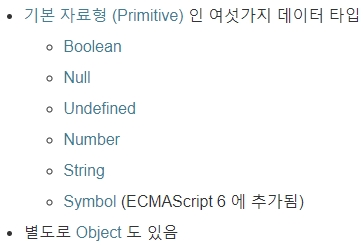
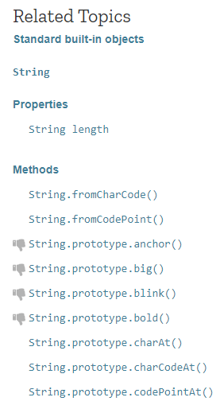

JavaScript - 데이터 타입(자료형)
JavaScript라는 컴퓨터 언어의 데이터 타입은 다음과 같은 종류가 있다.

(1) Number(숫자)
Number 데이터 타입에서 중요한 것은 연산이다.
+, -, *, / 등은 이항 연산자 중에서 산술 연산자이다.
(2) String(문자열)
문자는 따옴표로 시작해서 따옴표로 끝나면 된다.
큰 따옴표이든, 작은 따옴표이든, 같은 형태로 시작하고 끝나면 된다.
※ 문자열의 기능:
javascript string으로 검색하면 Mozilla 페이지가 나온다.
문자열의 기능 Mozilla 페이지 바로가기

왼쪽 탭에 여러 가지 기능이 나와있다.
'Hello world' .length → 11글자임을 알려준다.
'Hello world' .toUpperCase → 전부 대문자로 바꿔준다.
'Hello world' .indexOf('o') → 'o'라는 글자가 4번째에 나온다는 것을 알려준다.
(첫글자가 0번째. 0, 1, 2, 3, 4번째이다.)
'Hello world' .indexOf('world') → 'world'라는단어가 6번째에서 시작된다는것을 알려준다.
" hello " .trim → 공백을 모두 없애고 "hello"를 출력해준다.
※ 대/소문자를 잘못 쓰면 작동하지 않는다.
cf) 1+1을 입력하면 숫자 데이터 타입이므로 2가 출력되지만
"1"+"1"을 입력하면 문자열이므로 11이 출력된다.
(3) Boolean(불리언)
※ 비교연산자(Comparison operator)
① ===: 동등 비교 연산자이자 이항 연산자(좌항과 우항이 있고, 좌항과 우항을 결합해서 어떠한 데이터를 만든다.)이다.
왼쪽과 오른쪽이 같으면 true, 다르면 false를 출력한다.
→ true, false 출력
② <(less than): <의 의미
→ true, false 출력
true와 false 두 가지 값을 묶어서 Boolean이라고 부른다.
Boolean은 단 2개의 데이터로 이루어져 있는 데이터 타입이다.